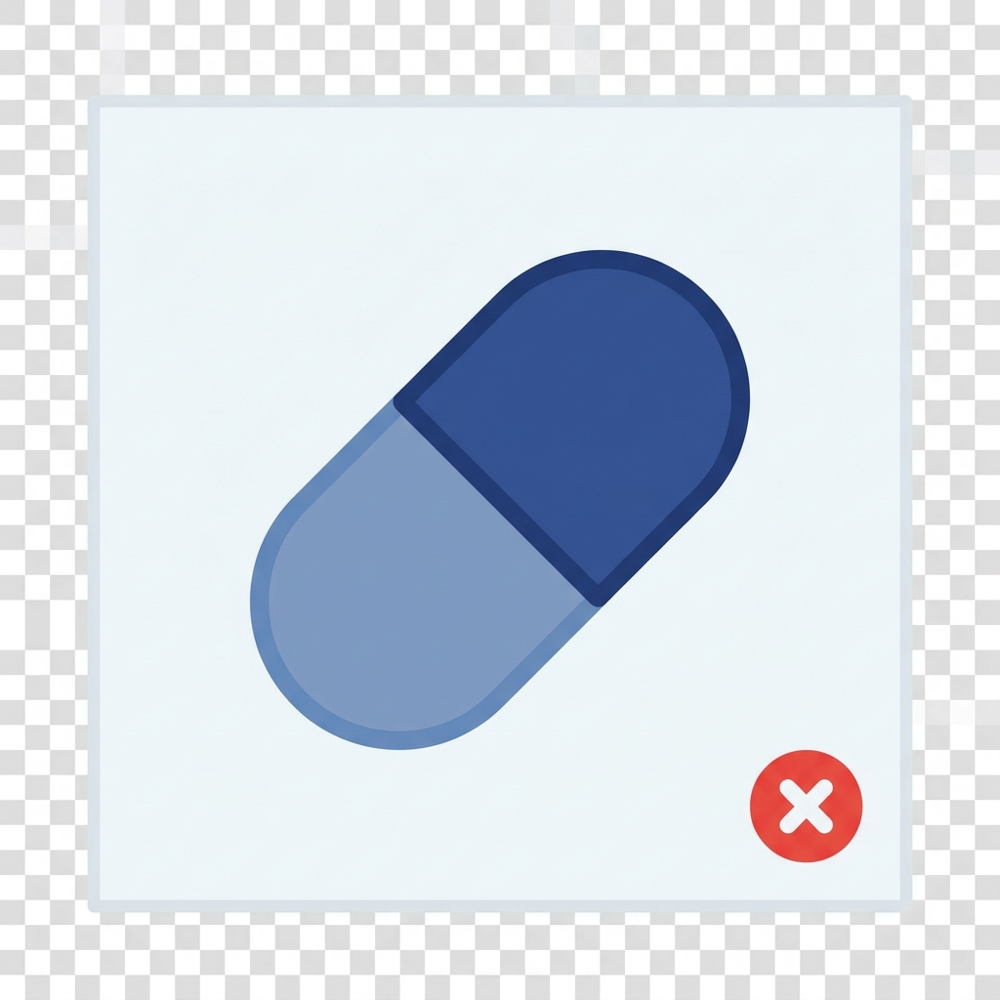
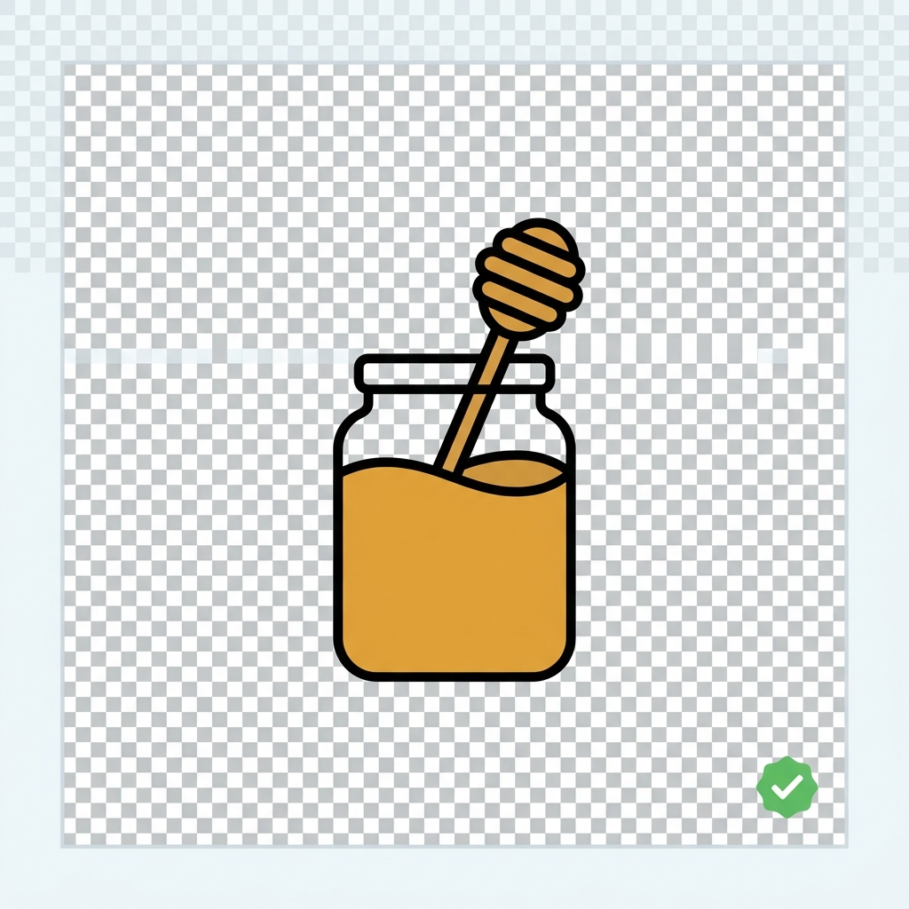
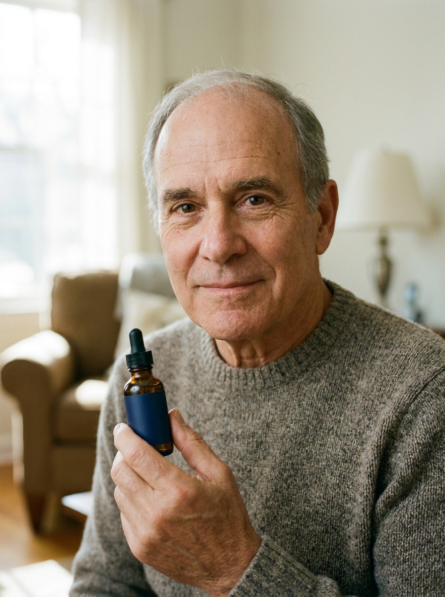
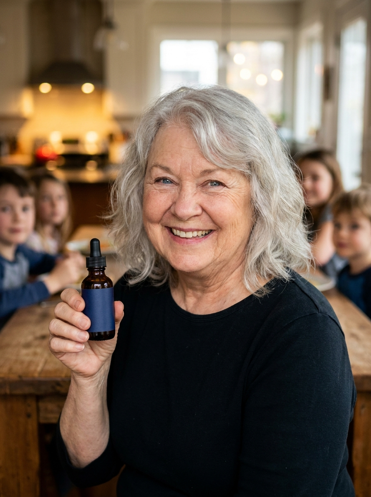

The "Honey Trick" Everyone Is Talking About Is Real. But Everyone's Doing It Wrong. I Know Because I'm the One Who Created.
You've seen the videos with famous faces talking about a simple honey trick that helps bring back names, words, and memories.
But there's one thing they don't tell you: it only works with the ingredients in the exact proportions.
If You've Followed Every Recommendation and Your Memory Keeps Getting Worse, This Is the Article You've Been Waiting For
Let me guess.
You've tried everything. The brain games. Omega-3. Ginkgo.
Aricept. Namenda. Exelon.
Maybe you've even started writing everything down on your phone so you don't forget appointments, names, and simple things that once came to mind without any effort.
You followed your doctor's recommendations exactly.
And your memory still lets you down at the worst possible moments.
The name of someone you've known for years suddenly disappears in the middle of a conversation.
You walk into a room and can't remember why you went there.
You put your keys somewhere "safe"—then spend half an hour looking for them.
Then someone says the two most frustrating words a person can hear:
"It's age."
I know exactly how painful that is to hear.
Because that's exactly what I once told someone in my own family.
And I have never been more wrong about anything in my entire life.
So let me tell you what no one has told you until now.
It was never your age. It was never your genetics. And it's not your fault.
Something was quietly preventing your brain from getting the fuel it needed to store and retrieve your memories.
And until you understand why, no game, pill, or mental exercise will be able to reach the real cause.
Lately, your feed has probably been full of people talking about a "honey trick for memory."
You've heard about it so many times that you may be starting to wonder whether there's any truth behind it. There is.
But here's the part they're leaving out:
Honey is only one of the two parts.
Using it by itself—or following the steps in the wrong order—doesn't stop the cycle that is making your mind more forgetful over time.
But when both parts are combined correctly, they help attack the problem from both sides:
removing the silent buildup of cadmium that is suffocating your neurons and protecting your brain from what keeps entering your body every day.
I'm going to show you exactly how it works.
Because I'm the one who discovered the original combination before all these incomplete versions started appearing online.
Read this before you spend another single dollar on any other memory solution.
I Was the Son With the Sharp Memory. I Told My Father It Was Just Age and That He Needed to Exercise His Mind More. I Was Completely Wrong.
My name is Markus.
I'm not a celebrity. I'm not a doctor who appears on TV shows.
I'm a researcher and formulator.
And for most of my life, I was the "lucky one."
The one who remembered names, dates, appointments, and conversations without having to write anything down.
I believed it was because I was doing something right.
That I paid closer attention. That I exercised my mind more.
That I had a level of discipline other people simply didn't have.
So when my father started forgetting names, repeating questions, and losing his train of thought, I repeated the same lie so many doctors tell people:
It's age. Write it down. Exercise your mind more.
I need to confess this, because it's the reason I'm writing this article.
I judged my own father.
Deep down, I believed that if he paid more attention and tried a little harder, he could get back to normal.
I was wrong.
Not just a little wrong.
Completely, shamefully wrong.
And the day I finally realized just how wrong I had been put me on the path that led to the exact formula behind the videos now spreading across the internet.
They simply left out the part that makes the trick actually work.
So I Tracked Every Pill He Took and Every Memory Lapse He Had for Two Weeks. What I Found Made My Blood Run Cold.
My father was 74 years old.
He was a husband, a father, a grandfather—and a man who had always taken pride in his mind.
But little by little, he started carrying a small notebook so he could write down everything he couldn't afford to forget.
He stopped telling some of his favorite stories because he would lose his train of thought halfway through.
And he started staying quiet during family dinners, afraid he might repeat a question he had already asked.
And there I was—the son with the sharp memory—telling him he needed to focus more and exercise his brain.
Until one day, he looked at me with tears in his eyes and said:
"Markus, I AM trying. I do everything they tell me to do."
So I decided to uncover the truth once and for all.
For two weeks, I tracked every medication he took.
I wrote down his sleep schedule, his walks, his diet, his memory games, and every small thing he forgot throughout the day.
I will never forget the moment I looked at those pages.
My father wasn't forgetting his pills.
He wasn't skipping his exercises.
He followed every recommendation with more discipline than anyone I knew.
And yet, his memory kept getting worse.
That was when the shame hit me.
He wasn't distracted.
He wasn't giving up.
And he certainly wasn't failing to make an effort.
Something inside his brain was preventing all that effort from producing any results.
No game or pill could fix a problem that no one had correctly identified.
That night, I stopped accepting "age" as an answer.
And I started investigating what was really happening to the fuel that was supposed to keep his brain working.
At 1:00 A.M., I Found the Study That Explained What Was Happening to My Father
I spent months digging through research that most people never get to see.
Then, one night, while my father slept and my coffee went cold beside the computer, I found it.
A study about insulin receptors in the brain.
The tiny "locks" that help glucose—the fuel your mind uses—enter your neurons.
The paper contained one sentence that I read five times.
It said that cadmium exposure could damage these receptors, preventing neurons from getting the energy they need to function.
I sat there staring at the screen, my heart racing.
Cadmium buildup. Damaged receptors. A brain without fuel.
That was my father.
It explained the names that disappeared, the words he could not find, and the conversations he could no longer follow.
And it explained why memory games and medications that only managed the symptoms never reached the real cause.
What I read next revealed not only why his memory kept getting worse...
But also how to help remove that buildup and protect the receptors from what kept entering his body.
And it was simpler than I ever could have imagined.
You're Not Simply Getting Older. Your Brain Is Losing Access to the Fuel It Needs to Remember.
Here is what is really happening inside your head—in simple terms.
Every name, word, or memory you try to recall requires energy.
And one of the main sources of that fuel is glucose.
But glucose does not simply enter your neurons on its own.
Insulin has to open the door.
Think of insulin as a key. And imagine that every neuron has a tiny lock called an insulin receptor.
When everything works properly, the key turns, the door opens, and the fuel enters.
Your neurons get the energy they need to recognize a face, follow a conversation, and find the right word exactly when you need it.
But when cadmium starts to build up, it damages those tiny locks.
It is like rust eating away at the receptor. The key is still there. The glucose is still outside. But the door no longer opens the way it should.
And without enough fuel, the brain starts shutting down functions that once seemed automatic.
The name of someone you know.
The reason you walked into that room.
The part of the story you were telling.
The conversation you had just a few hours earlier.
Now you can understand why exercising your mind more and taking pills never solved the problem.
The problem was not a lack of effort. The problem was that not enough fuel was reaching your neurons.
You could do crossword puzzles every morning, take every pill exactly on schedule, and still struggle to find a simple word during a conversation that evening.
And there is a second thief.
Even when your body manages to remove a small amount of this metal, you are exposed to it again through water, food, and air. Day after day.
So listen carefully.
It is not a lack of attention. It is not a lack of effort. And it is not your age.
Tiny locks inside your brain are being damaged by cadmium, preventing your neurons from getting the fuel they need.
And those locks can start working again.
There Are Only Four Ways to Fix This. Three of Them Will Fail You.
Once I understood the real cause, the question became simple.
How could I remove the built-up cadmium and get those tiny locks working again?
There are only four approaches people usually try.
Let me save you years of frustration.
Way #1: Memory Games
You already know how this ends.
Crossword puzzles, brain teasers, and phone games may exercise your mind.
But none of them can remove built-up heavy metal or repair a damaged receptor.
You can do Sudoku every morning and still forget a simple word at dinner.
You cannot exercise a brain that is not getting enough fuel.

Way #2: Common Supplements
Omega-3. Ginkgo biloba. Brain vitamins.
Maybe you have already tried one of them and noticed no difference at all.
Of course you didn't.
They were not designed to remove built-up cadmium and protect your brain from what keeps entering your body every day.
At best, they try to feed a system whose door is still closed.
Way #3: Medications
Aricept. Namenda. Exelon.
They may help manage certain symptoms.
But they were not created to remove cadmium from your neurons or prevent continued exposure from damaging the receptors.
That is why my father kept getting worse even though he followed every prescription exactly as directed.
Managing the decline is not the same as correcting its cause.

+Way #4: Two Natural Ingredients
Wild Ikaria honey and lithium orotate.
Maybe you have already tried taking honey by itself and felt nothing.
Of course you didn't.
One ingredient can only do one part of the job.
Honey alone cannot remove what has already built up and, at the same time, prevent the whole process from starting again the next day.
It is only half of the protocol.
But when the two are used together, in the right forms, in the right amounts, and in the exact order?
It was the only combination that finally began to change what I was seeing in my father.
And that is exactly the part the viral videos never explain.
Let me show you why the order changes everything.
Remove the Cadmium. Protect the Locks. In That Order.
The protocol has two ingredients.
And each one does a different part of the job.
Skip either one, and the entire process falls apart.
That's why taking honey by itself doesn't produce the results people expect.
Step One: Remove the Buildup. Wild Ikaria Honey.
I'm not talking about the ordinary honey you find at the grocery store.
Honey produced in the mountains of Ikaria contains an unusually high concentration of natural compounds called anthocyanins.
These compounds help bind to built-up cadmium and carry it out of the neurons.
As that rust-like buildup begins to clear away, the tiny locks on your neurons are no longer completely blocked.
And glucose finally has room to enter again.
The brain begins receiving the fuel it needs to recall a name, follow a conversation, and access memories without that desperate struggle.
But this only addresses the cadmium that is already there.
Because the next day, you go back to drinking the same water, breathing the same air, and eating food exposed to the same metal.
It's like mopping the floor while the faucet is still running.
Step Two: Protect Against What Keeps Coming In. Lithium Orotate.
Lithium orotate helps protect the receptors from the new exposure that happens every day.
While the anthocyanins help remove the old buildup, this mineral form acts as a barrier against the cadmium trying to reach the neurons again.
Now the locks stay clear long enough to do what they were supposed to do from the beginning:
open the door and let the fuel in.
Remove. Protect. Refuel.
That is the real secret.
Not honey alone.
But two ingredients, in the right forms, in the right amounts, and in the exact order.
But discovering the two functions was the easy part.
Getting the two ingredients to actually work together in real life nearly broke me.
Knowing the Protocol Wasn't Enough. It Took Me Almost a Year to Make It Actually Work.
You may already be thinking exactly what I thought:
"If it's just Ikaria honey and lithium orotate, I can buy both and mix them at home."
That was the first thing I tried. It was a disaster.
Here's what no one tells you.
The two ingredients only work as well as the concentration, form, and ratio used.
Get any one of them wrong, and you feel absolutely nothing.
Or worse.
Honey Is Completely Inconsistent.
The amount of anthocyanins changes depending on where the honey comes from, the flowers involved, the harvest, and even how it was stored.
Ordinary grocery-store honey doesn't even come close.
And even among wild honeys, two jars can contain completely different concentrations.
A spoonful is not a scientific measurement.
Lithium Orotate Cannot Be Measured "By Eye."
Too little does not provide the protection needed.
And using more does not mean getting better results.
It has to be used in a specific form and measured precisely.
And Even With the Right Ingredients, They Have to Be Balanced.
Too much of one can interfere with the function of the other.
The form, ratio, and order are the entire protocol.
So I turned my kitchen into a small laboratory.
For almost a year, I weighed, mixed, and compared different batches.
I recorded ratios in notebooks, changed only one variable at a time, and threw away far more formulas than I kept.
In most trials, nothing changed.
In others, the difference appeared briefly and then disappeared again.
Until one formula behaved completely differently.
Stable. Clear. Consistent.
I prepared it again to make sure.
Then one more time.
The result repeated itself every single time.
That was the formula.
Not simply "honey mixed with a mineral."
An exact combination. In the exact forms. In the exact amounts. In the exact order.
That was the formula I finally gave to my father.
I Watched My Father Come Back to Us. This Is Him, Before and After.
I gave my father that exact combination.
The right dose, every day. No new medication. No memory games.
Just this.
One week later, he called me.
This time, there was no fear in his voice.
"Markus… that fog is lifting."
That feeling of waking up with a heavy head.
Of searching for a simple word and not being able to find it.
Of losing his train of thought before he could finish a sentence.
It was all beginning to fade.
Then the memories started coming back. And not slowly.
He wasn't trying harder to remember.
His brain had simply started getting the fuel it needed again.
First, he remembered where he had put his keys without searching the entire house.
Then he called every one of his grandchildren by name without hesitating.
And during dinner, he picked up a story at the exact point where he had left off minutes earlier.
I need you to understand this.
The first changes may seem small. But they aren't.
Because every name that comes back, every word that appears at the right moment, and every conversation you can follow represents a piece of your life being given back to you.
Four months later, my father seemed like the man I had always known again.
Without adding another medication.
Without spending hours doing mental exercises.
Just using the same combination every day.
But it wasn't the words or names he recovered that made me cry.
It was this.
For months, he had stayed quiet at family gatherings because he was afraid he might repeat himself or call someone by the wrong name.
He had started avoiding conversations with his own grandchildren.
He preferred to simply smile and listen so no one would notice what was happening.
Now look at him.
Sitting at the table, telling a story from his childhood with details even I no longer remembered.
Laughing with his grandchildren.
He was my father again.
That is the part I would have paid any amount of money for.
And it cost almost nothing.
The news spread the way it always does among families living with the same fear.
His friends wanted to try it.
Then their friends did too.
Before long, I was preparing small batches in my kitchen for hundreds of people.
Then, this year, I turned on the television.
And there was my formula.
In news reports. In polished ads. In carefully produced interviews.
Turned into expensive capsules that got the proportions wrong and hid the formula inside a pill the body could barely use.
They took the protocol. Diluted the ingredients. Put a familiar face in front of it. And multiplied the price.
That was when I decided to do something.
So I Made the Real Formula. The Original Combination, Properly Measured. I Called It MemoFlow.
I couldn't keep making small batches by hand for the entire country.
So I decided to do it the right way.
I took the exact formula I had spent nearly a year perfecting to a specialized laboratory.
Anthocyanins to help remove built-up cadmium.
Lithium orotate to help protect the receptors from what keeps entering the body.
In the right ratio. In the right forms.
And there's a simple way to recognize this combination. When honey comes into contact with the anthocyanins and lithium orotate in our formula, it takes on this characteristic blue color.
So if you find any of those "honey for memory" products out there and it's still yellow or golden like regular honey, pay attention: it's not the same formula. It's missing the complete combination we developed specifically to reverse memory loss.
In a liquid formula designed so the ingredients would not remain trapped inside a capsule that the body has difficulty using. Not a pill.
Drops. Exactly how the combination needed to be used.
Just two drops a day. A few seconds. That is the entire routine.
I called it MemoFlow.
And I want to make it very clear what it is NOT.
It is not a medication. It is not another ordinary, single-ingredient capsule with an attractive promise on the label.
And it is not one of those incomplete versions of the "honey trick" that use only half of the protocol and leave you wondering why nothing changed.
It is the complete combination. The original. Developed to perform the two functions your brain needs, in the right order.
Remove what has already built up.
And protect the locks from what keeps coming in.
And I priced it with the families I created this formula for in mind.
Not a celebrity's profit margin.
Real People. Changes Their Families Noticed. No Additional Medication. No Hours of Mental Exercises.
My father was only the beginning.
Here are three more people who used the same formula.
"I knew exactly what I wanted to say, but the words would disappear before they reached my lips.
Sometimes, I would make up an excuse and end the conversation just so no one would notice.
After I started using the two drops every day, I noticed it happening less and less.
Last week, I spoke with a former coworker for almost an hour and didn't lose my train of thought once.
That may seem like a small thing to someone else.
To me, it felt like getting my own voice back."

"I had stopped driving alone because I was terrified that I might get lost and not be able to find my way home.
Even simple things, like going to the grocery store, started to feel too complicated, so I always depended on someone in my family.
Last month, I decided to try again. I got in the car, drove to the store, took my time shopping, and made it home without having to call anyone.
Afterward, I stopped at a restaurant near my house and picked up something to eat without overthinking it or asking for help.
I sat in my living room in silence for a few minutes.
It wasn't about the grocery store.
It was about realizing that I still had my independence."

"I was becoming quieter and quieter at family gatherings.
I was afraid I would repeat a question, forget someone's name, or tell the same story for the third time.
A few weeks after I started using MemoFlow, we were all sitting around the table, and I told a story from my daughter's childhood with details even she no longer remembered.
She started to cry.
Then she held my hand and said:
'Mom, it feels like you're here with us again.'
That was when I realized it wasn't only my memory that was changing.
My family was no longer afraid of losing me."
A gentle warning, because I mean this seriously:
Do not use more than the recommended two drops because you believe it will make the formula work better or faster.
Getting the ratio right is exactly what took almost a year to perfect. More does not mean better. Consistency does.
Use it exactly as directed, and give the protocol the time it needs to perform the two functions it was designed for.
Celebrity Capsules Cost a Fortune. Expensive Medications Only Manage the Decline. Today, You Can Get MemoFlow for Just $19.99
Let's talk about what this should cost.
Medications that only manage the symptoms: hundreds of dollars over the course of several months, without ever addressing the built-up cadmium.
Expensive capsules based on an incomplete version of my own formula: nearly $300 for just a few bottles.
Everything you have already spent on omega-3, ginkgo, memory games, and supplements that made no difference at all:
For many families, thousands of dollars.
MemoFlow was going to launch at $100 per bottle.
That was the plan.
That is the true value of the formula.
But I didn't create this to increase profit margins.
I created it for my father.
And for families like yours, who should never have to choose between protecting their memory and paying their monthly bills.
That's why I'm making MemoFlow available today at the special launch price of just $19.99 per bottle.
That is already 80% off the original price.
But for me, this was never just about money.
I want as many people as possible who are currently suffering from memory loss, dementia, and Alzheimer's to remember the names of their own children and grandchildren—and the most important moments of their lives.
That's why I prepared something special.
When you order 3 bottles of MemoFlow today, you will receive 3 additional bottles completely free.
Today's Special Launch Offer
BUY 3 BOTTLES AND GET 3 MORE FREE
80% OFFJust $19.99 per bottle
6 bottles of the original formula, used daily in the exact ratio it was designed for.
That's less than what some incomplete capsules charge for a formula that only does half the job.
But I need to be transparent.
Because this is the launch and MemoFlow is being produced in small batches using the correct proportions, I cannot promise that this offer will remain available.
Once the promotional batch and the free bottles are gone, they're gone.
60-Day Money-Back Guarantee
Use the Entire Bottle. If Your Memory Doesn't Improve, I'll Refund Every Penny.
I know you have already spent money on things that failed to deliver what they promised.
That's why I'm taking on all the risk.
Try MemoFlow for 60 days.
Use the entire bottle exactly as directed.
If your memory and mental clarity do not improve…
If names still disappear in the middle of conversations…
If you still walk into a room and forget why you went there…
Or if you simply don't feel like you are becoming yourself again…
Send a message to my team, and we will refund every penny.
Empty bottle. No interrogation. No arguments.
Either you keep the results…
Or you keep your money.
The one thing you don't have to do is stay stuck in the same place.
This is not just a marketing line.
It is a promise from the man who created the formula.
MemoFlow 60-Day Guarantee
Use the entire bottle.
If you do not notice an improvement in your memory, mental clarity, and ability to find words, names, and memories when you need them, simply contact us.
We will refund every penny.
No return-window tricks.
No fine print.
Your only risk is doing nothing while those small memory lapses continue to grow.
See How to Get Started Tomorrow Morning
It's simple.
1. Tap the button below and choose your kit.
Most people start with two or three bottles.
Partly to save money.
And partly because once you begin to notice your mind becoming clearer, you won't want to risk interrupting the protocol.
2. Enter your information on the secure checkout page.
3. Your MemoFlow will be shipped directly to your home.
Tomorrow morning:
Two drops. A few seconds.
That is the entire routine.
Then go on with your day as usual…
And let the formula perform the two functions your brain was unable to handle on its own:
help remove built-up cadmium and protect the tiny locks from what keeps entering your body.
Six Months From Now, You'll Either Trust Your Mind Again… or You'll Still Be Reading Articles Like This One
Here's the truth no one likes to say:
This does not get better on its own.
Another year goes by. Another birthday when the name of someone you love disappears for a few seconds.
Another family dinner when you choose to stay quiet because you're afraid of repeating a question or losing your train of thought.
Small memory lapses do not stay small.
They become more frequent. And the fear grows with them. The saddest words I hear are always the same:
"I wish I had started sooner."
That does not have to be you. Not today.
Imagine the fog finally beginning to lift.
You walk into a room and immediately remember why you went there.
Names come to you at the right moment, without that awkward pause.
You sit at the table, follow every conversation, and tell your grandchildren a story without losing your train of thought halfway through.
This is not just about having a better memory.
It is about trusting your own mind again. It is about no longer being the person everyone worries about… and becoming the person who cares for others, makes decisions, takes part, and keeps the family together.
You have spent your whole life holding on to the names, stories, and moments of the people you love.
It is okay to want to protect the memories that make you who you are.
MemoFlow was created to help you do exactly that.
The original formula. In the right forms. In the right amounts.
Developed by the man who created the protocol—not by someone who copied only half of it to sell expensive capsules.
Markus is an independent researcher and formulator. MemoFlow is a dietary supplement and is not intended to diagnose, treat, cure, or prevent any disease. Consult your doctor before starting any supplement, especially if you have a medical condition or take medication. Individual results may vary.
Carolyn Matthews
The key-and-lock illustration FINALLY helped me understand what may be happening to my memory.
I spent years believing I just needed to "pay more attention."
But how can you force your brain to remember when the fuel is still locked outside?
I'm ordering today.
Like · Reply · 567 · 2h
Markus
Carolyn, please don't blame yourself.
You believed the same explanation the rest of us were given.
What matters is that you now have a different way of looking at the problem. Welcome. ♥️
Like · Reply · 128 · 1h
Michelle Ostrander
I already tried the homemade version.
I bought wild honey and lithium orotate separately and used them for five weeks.
NOTHING.
Now that I've read the part about concentration, form, and ratio, I understand why I didn't notice any difference.
I was using two random ingredients, not the original formula.
I won't make that mistake again.
Like · Reply · 489 · 3h
Amber Woolworth
Michelle, THE EXACT SAME THING happened to me.
I used regular honey because I thought "honey was honey."
Then I found out that the amount of natural compounds can vary completely from one jar to another.
I wasted almost two months trying to guess the right proportions.
I just ordered MemoFlow.
Like · Reply · 142 · 2h
Katherine Bennett
I'm 69 years old.
I started avoiding conversations because words would simply disappear in the middle of my sentences.
Last Sunday, I forgot my granddaughter's boyfriend's name while he was sitting right in front of me.
I have never felt so embarrassed.
I just placed my order.
I'll come back in 60 days and tell everyone how it went. Screenshot this.
Like · Reply · 418 · 4h
MemoFlow Team
Katherine, we'll be waiting for you.
Use it exactly as directed and give the formula the full 60 days.
We can't wait to hear your story. ♥️
Like · Reply · 67 · 3h
Robert Alessi
I took memory medications for years.
They may have helped at certain times, but I never felt like they were addressing what was actually causing the problem.
The line "managing the decline is not the same as correcting its cause" really hit me.
I'm going to talk to my doctor and try MemoFlow.
Like · Reply · 342 · 5h
Markus
Robert, please do not stop any medication your doctor prescribed.
What we offer was never meant to replace medical treatment.
It was designed to address what the medication is not designed to address.
Talk to your doctor. Many of our readers do exactly that. ♥️
Like · Reply · 96 · 4h
Hannah Cooper
I thought it was another internet scam.
My daughter insisted I read the whole article before judging.
Three weeks in, I stopped losing my train of thought mid-sentence.
Yesterday I remembered my grandson's school play date without writing it down.
For me, that was the moment.
Like · Reply · 612 · 6h
Stephen Carter
I was about to write something sarcastic. I had the comment typed and everything.
Then I read about the cadmium piece.
I went and looked it up. There are actual peer-reviewed studies about heavy metals in the hippocampus.
I deleted the sarcastic comment.
I'm 58. I just ordered.
Like · Reply · 504 · 7h
Markus
Stephen, that is exactly the kind of person we wrote this for.
Someone willing to check the work before believing the work.
That is rarer than people think. Thank you. ♥️
Like · Reply · 88 · 6h
Natalie Parker
My husband's neurologist ran the same battery of tests he runs on every patient.
He has been seeing him for two years.
This time, he said, and I quote: "Whatever you changed, keep doing it."
I almost cried in the parking lot.
Like · Reply · 731 · 8h
Amber Woolworth
Natalie, I had the same experience. My mom has been the same person for the last three years.
This week she called me by my actual name on the first try. No hesitation.
These are the things no clinical trial measures.
Like · Reply · 213 · 7h
Jacob Morgan
My mother forgot my father's name on their 47th anniversary.
That was the day I started looking for anything that was not a pill.
Four months later she still calls him "honey" instead of "David."
But she calls him by the right name. Every single time.
Whatever this is, it gave me my parents back.
Like · Reply · 891 · 9h
Samantha Edwards
I am a lawyer. I do not endorse products.
What I will say is that the FDA disclaimer on the site is unusually complete for this category, the supplement facts panel matches what the article describes, and there is no income claim on the page.
For people worried about legitimacy, that is meaningful.
Like · Reply · 387 · 10h
Jessica Reeves
I was one of the first 100 customers in the first batch.
I have reordered four times.
I do not write reviews. I do not fill out surveys. I do not post on social media.
But I am writing this comment because I want the person reading this to know:
if you are on the fence, that fence is the only thing standing between you and the bottle.
Like · Reply · 558 · 11h
David Klein
I am the son who finally stopped trying to fix it for his father.
He is 74. He refused to see a doctor for two years.
I ordered the three-bottle package and left it on his kitchen counter.
He never said a word. He just used it.
Last week he called me by my childhood nickname. First time in five years.
Whatever you are doing, please keep doing it.
Like · Reply · 974 · 12h
Linda Marsh
My husband noticed before I did.
He said, "You asked me the same question three times this morning."
I was 62. I told him he was exaggerating.
He was not.
I read this article in one sitting. I clicked the link.
I am 64 now. We are both sleeping better.
Like · Reply · 442 · 13h